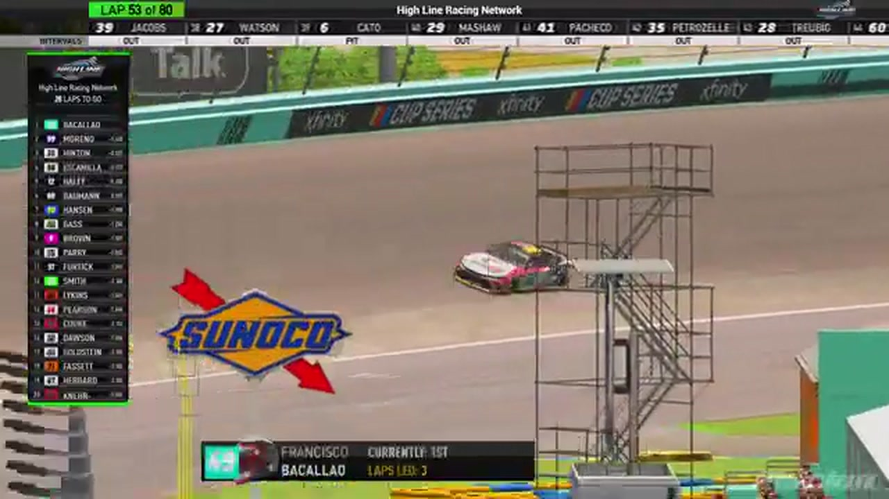

Francisco Bacayo
Bacayo Buena Racing
A PODIUM FILE WITH AN OPEN RESULT HORIZON
- Official files
- 3
- Central editions
- 0
- Exact tape cues
- 10
- Accepted podiums
- 2
Francisco Bacayo has 2 position-specific top-three receipts: S1 R2 at Homestead-Miami (P2); S1 R1 at Daytona (P2). No feature win is currently supported in the accepted result ledger. HLRN materials currently associate the file with Bacayo Buena Racing. The currently indexed source window runs from November 17, 2025 through December 1, 2025.
The official tape index connects the name to 3 race files, 0 Central editions, and 10 primary-broadcast navigation cues. The densest direct-tape categories are restart (3 cues) and result (2 cues). Those counts describe where the name is easiest to find; they are not fault, pace, or performance grades. A source-attributed car frame is published with its original video and timestamp. That is the current discovery map for Francisco Bacayo.
That is enough for a real result dossier without pretending the archive knows every start or finish. Owner classifications can extend the record later through the same stable race IDs. No Highline Live bonus file is currently attached to this identity. The displayed name is labeled broadcast lower third confirmed; that status remains visible so an owner roster can strengthen or correct the identity without rewriting the evidence trail. Those boundaries define Francisco Bacayo's public HLRN file.
10 featured race-tape cues
These are discovery routes into complete HLRN broadcasts, not performance grades or inferred results.
- S1 / R2 · RESULT
Ethan Moreno is confirmed atop the Homestead-Miami results
The Homestead broadcast's closing readout and interviews record Ethan Moreno first, Francisco Bacayo second, and Juan Escamilla third.
Homestead-Miami - S1 / R1 · RESULT
Jaden Porter is confirmed atop the Daytona results
The primary broadcast cannot show the live finish because of connection trouble, but the booth confirms Jaden Porter as the winner and reads Francisco Bacayo second and Justin Lee Pearson third from the displayed results.
Daytona - S1 / R1 · INTERVIEW
Francisco Bacayo tells the runner-up story
Francisco Bacayo enters the booth as the Daytona runner-up and recounts the finish before introducing Bacayo Buena Racing.
Daytona - S1 / R2 · RESTART
The Homestead field takes the opening green
Francisco Bacayo launches the actual Race 2 field with Juan Escamilla and Nick Bowman alongside. This replaces the embedded Daytona recap that the original extractor mistook for Homestead's opening green.
Homestead-Miami - S1 / R2 · RESTART
Ethan Moreno controls Homestead's four-lap caution order
With four laps scheduled to remain, the caution freezes Ethan Moreno ahead of Juan Escamilla, Francisco Bacayo, and Dwayne Fertick. The booth reads the running order rather than reviewing an incident involving those leaders.
Homestead-Miami - S1 / R1 · RESTART
Jaden Porter and Francisco Bacayo bring Daytona back to green
S1 / R1 at 1:12:12: Jaden Porter, Francisco Bacayo, and Zack Cato are in the booth's front-pack call as Daytona returns to green. The cut keeps the restart launch and the first lap of lane development together.
Daytona - S1 / R1 · STRATEGY
Jerry Fassett enters the Daytona pit-strategy swing
S1 / R1 at 1:14:32: Pit timing starts to reorganize the field, with Jerry Fassett, Zack Cato, Francisco Bacayo, and John Miles named in the sequence. The clip is a strategy receipt from the primary Daytona broadcast, not a reconstructed scoring sheet.
Daytona - S1 / R2 · INCIDENT
Homestead's first lap immediately tests the field
Cars get loose high and low on the opening lap before Thomas Gratton reaches pit road and pole sitter Francisco Bacayo brushes the wall. HLRN explains that the event will stay green until its scheduled lap-25 caution.
Homestead-Miami - S1 / R2 · QUALIFYING
Francisco Bacayo and Juan Escamilla lead the Homestead grid
After the anthem, HLRN rolls through the current Homestead grid with Francisco Bacayo on pole and Juan Escamilla, Nick Bowman, Ethan Moreno, Craig Rowe, and Matt Brown among the front starters.
Homestead-Miami - S1 / R1 · POSTRACE
Jaden Porter and Francisco Bacayo anchor the Daytona post-race result review
S1 / R1 at 1:47:55: The reviewed live-race close has passed before this Daytona result booth review begins with Jaden Porter, Francisco Bacayo, Justin Lee Pearson, and Nick Bowman named in the discussion. It remains post-race context, not a new incident, stage, strategy call, finish, or result receipt.
Daytona
Complete starts, finishes, and points remain open beyond the recovered results. The public spelling has broadcast identity support; an owner roster can still add legal-name, number, and team-history detail.